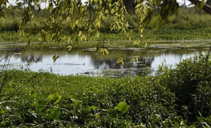

Paisaje protegido
Buscando conservar la flora y fauna nativa, las actividades que se proponen en el Área son totalmente amigables con la naturaleza.

Responsabilidad social
En BioLagos trabajan quince mujeres pertenecientes a familias de pescadores de la zona. Además, el proyecto implicó la mejora de las condiciones de vida de la población aledaña.
Cómo llegar
Biolagos se encuentra a menos de dos kilómetros de la Ruta Provincial 21, sentido oeste. Su acceso puede ser por vehículos motorizados o bien por la biscisenda ubicada sobre el Camino Don Orione.